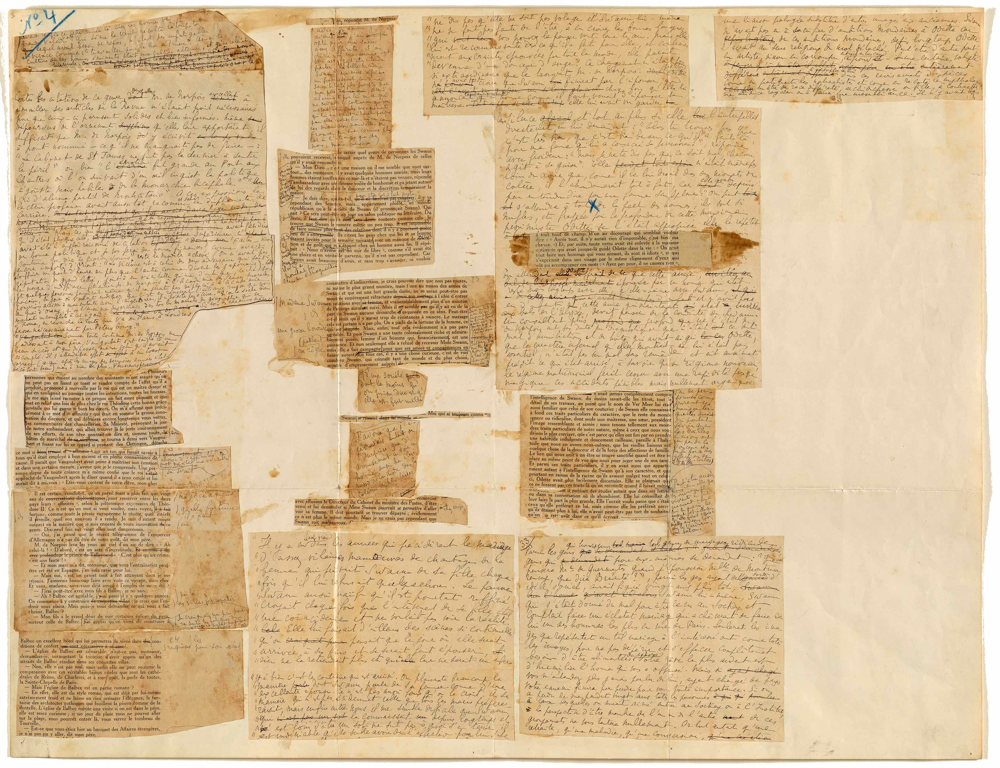
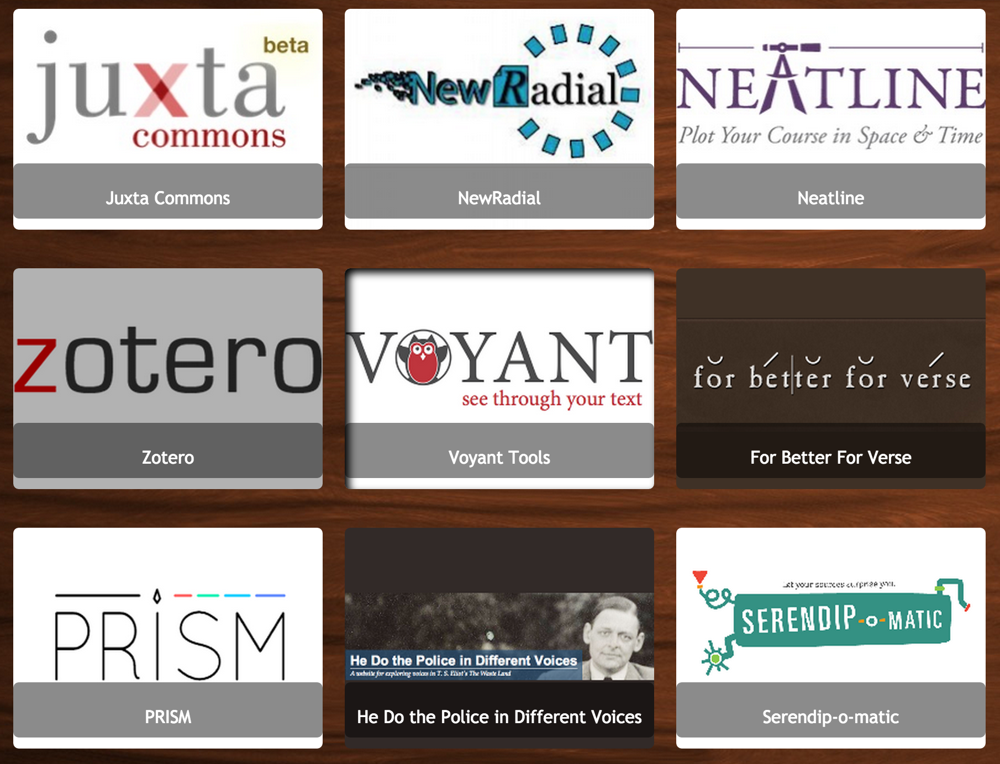

I am an Assistant Professor in Digital Prototyping at Brock University’s Centre for Digital Humanities. I completed my doctorate at the University of Victoria, where I conducted research on 3D geospatial expression and scholarly communication for the Modernist Versions Project (MVP) and Implementing New Knowledge Environments (INKE) in the Electronic Textual Cultures Lab (ETCL) and the Maker Lab. I also developed an open source toolkit for digital humanities pedagogy with grant funding from the Association for Computers and the Humanities (ACH). I am currently working on a book-length history of the mechanical production and interpretation of texts before the advent of digital computing.
Book Project
Modern Manuscripts. Procedural Expression. Digital History.

My book project examines modernist experiments in the mechanical production of texts, examining manuscript materials of Proust, Roussel, Barnes, and Beckett. Across these and other authors, I am tracing experimental forms of composition that translate technological and political procedures into methods for arranging and revising literary texts. This project offers a modernist history of the mechanical production and intepretation of texts, traditionally associated with digital computing. As part of this project, I am also prototyping online reading environments that move beyond digitizing the manuscript image to recover material forms of textual arrangement available in an archive.
Prototypes
Conference Presentations
-
“Hands-On Textuality: Designing Literature for Indie Game Development.” Annual Modern Language Association (MLA) conference, Vancouver, BC. (9 January 2015).
-
“Algorithmic Reading Before the Computer: An Experimental Environment for Modern Manuscripts.” Implementing New Knowledge Environments (INKE) Interface Design conference, IIT Institute of Design. 20 September.
-
“Processing Modernism: The Textual Politics of Nightwood.” Joint Institut des Textes et Manuscripts Modernes (ITEM) and Etudes Montpellérianes du Monde Anglophone (EMMA) conference, Université de Paul-Valéry Montpellier III. 11 October.
Z-axis research
Geospatial Criticism. Cultural Critique. 3D Modeling.

Z-Axis research is a mapping project that uses warped 3D maps to interpret modernist literature, rather than impose GIS-specific space on texts that predate digital mapping. This project’s z-axis method uses data from modernist novels to warp archival maps from the modern period in 3D. The results visualize the spatial experience of the modern city as represented by a given novel, considering marginal and incomplete perspectives on the ground, rather than top-down or totalizing views from above. This project was first conceived by myself and Katie Tanigawa, and is currently under development with the Modernist Versions Project (MVP), Implementing New Knowledge Environments (INKE), and Compute Canada.
Prototype
Recent Presentations
-
Modernist London and the Digital Map. Seminar. With Katie Tanigawa and Stephen Ross. Annual Modernist Studies Association (MSA) conference, Boston, MA. (Scheduled November 2015).
-
“Open Source Interpretation using Z-axis maps.” Social Knowledge Creation in the Humanities conference, at the Digital Humanities Summer Institute (DHSI), Victoria, BC. (7 June 2015).
-
“Arguing Through Archival Objects: A Z-Axis Method for 3D-Printed Interpretation.” Annual Modern Language Association (MLA) conference, Vancouver, BC. (8 January 2015).
-
“Problems and Solutions for Modernist Digital Humanities.” with Katie Tanigawa. Annual Modernist Studies Association (MSA) conference, Pittsburgh, PA. (8 November 2014).
-
“Z-Axis Scholarship: Modeling how Modernists Wrote the City.” with Stephen Ross, Jentery Sayers, Katie Tanigawa, and the INKE-MVP research team. Digital Humanities 2014 Conference, École Polytechnique Fédérale de Lausanne (EPFL) and Université de Lausanne (UNIL). (9 June 2014).
Pedagogy Toolkit
Digital Pedagogy. Open Source Repository. Social Knowledge Creation.

Pedagogy Toolkit is an open source and community-driven repository of teaching materials, community-authored guides to teaching with DH tools, and open access syllabuses and a syllabus templating tool. This project applies an open source philosophy to course development, offering a platform for pedagogues to share, author, and develop digital activities and teaching platforms. The repository serves as a contact zone where tool developers and a range of humanities pedagogues can contribute their expertise. All content is free to use for any non-commercial purpose, including open source code for authoring teaching and project websites with no funds or technical expertise required. This project is powered by Jekyll and GitHub Pages. I developed it with a microgrant from the Association for the Computers and the Humanities (ACH). Teach with Pedagogy Toolkit
Blog posts
Conference Activity
-
“Building Social Repositories and Extending their Applications.” Workshop. Social Knowledge Creation in the Humanities conference, at the Digital Humanities Summer Institute (DHSI), Victoria, BC. (7 June 2015).
-
“Building a Toolkit for Digital Pedagogy.” Digital Diversity conference, Edmonton, AB. (8 May 2015).
-
“Pedagogy Toolkit.” Implementing New Knowledge Environments (INKE) conference: Sustaining Partnerships to Transform Scholarly Prouction, Whistler, BC. 27 January, 2015. Digital Project Demonstration.
Course websites
Create your own course website in under an hour using Pedagogy Toolkit templates. No technical experience, software, or funds are required. View the instructions here and see my course sites built with the templates below.
English 135: Academic Reading and Writing
English 147: Literary Traditions and Transformations
Service
Modernist Studies Association (MSA) Executive Board
I currently serve as the webmaster on the executive board of the Modernist Studies Association.
I maintain the following websites: